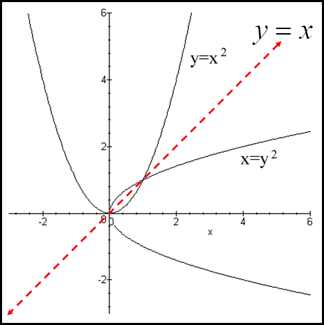
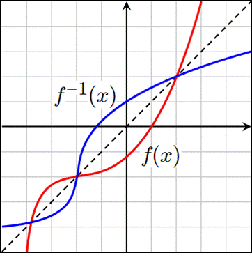

Inverse Functions & Relations
Homework
Inverse Relations - when one relation contains (x,y) & the other contains (y,x)
|  |
$\table \text"reflect over y=x, switch the x& y"; \text"the inverse of "f(x)\text" is " f^{-1}(x); f^{-1}(x)=±√{x}; \text"is "f^{-1}(x)\text" a function?"$ |
| $\table \text"reflect over y=x, switch the x& y"; \text"the inverse of "f(x)\text" is " f^{-1}(x); f^{-1}(x)=±√{x}; \text"is "f^{-1}(x)\text" a function?"$ |
|
Ex) Find the inverse of $f(x)$, then graph $f(x)$ & $f^{-1}(x)$
$\table f(x)=1/4(x+2)^2-3;y=1/4(x+2)^2-3;x=1/4(y+2)^2-3;x+3=1/4(y+2)^2;4(x+3)=(y+2)^2;± √{4(x+3)}=y+2;± √ {4} √{(x+3)}-2=y; ± 2√{(x+3)}-2=f(x)$
| Polynomial Funcitons |
| Even Degree $(x^2,x^4,x^6,...)$ |
Odd Degree $(x^3, x^5,x^7,...)$ |
| $f^{-1}(x)$ is not a function |
$f^{-1}(x)$ is a function |
|
 |
| Polynomial Funcitons |
| Even Degree $(x^2,x^4,x^6,...)$ |
| $f^{-1}(x)$ is not a function |
|
| Odd Degree $(x^3, x^5,x^7,...)$ |
| $f^{-1}(x)$ is a function |
|